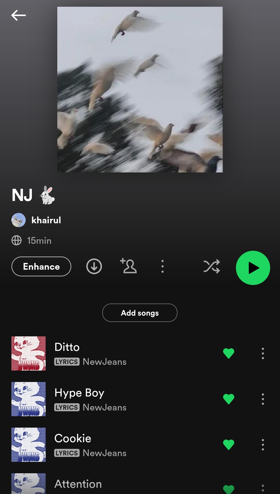
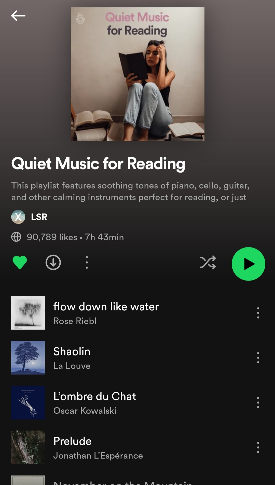
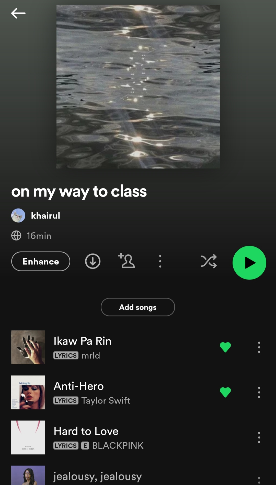
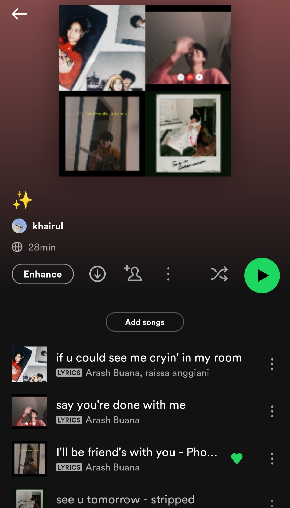
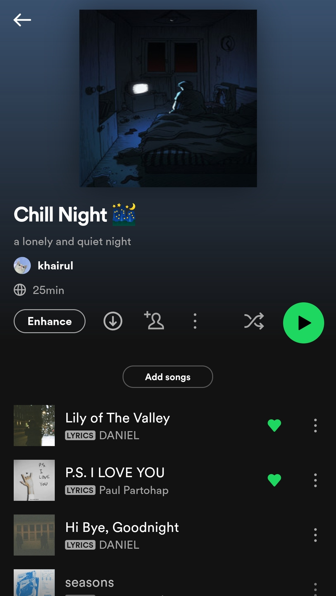
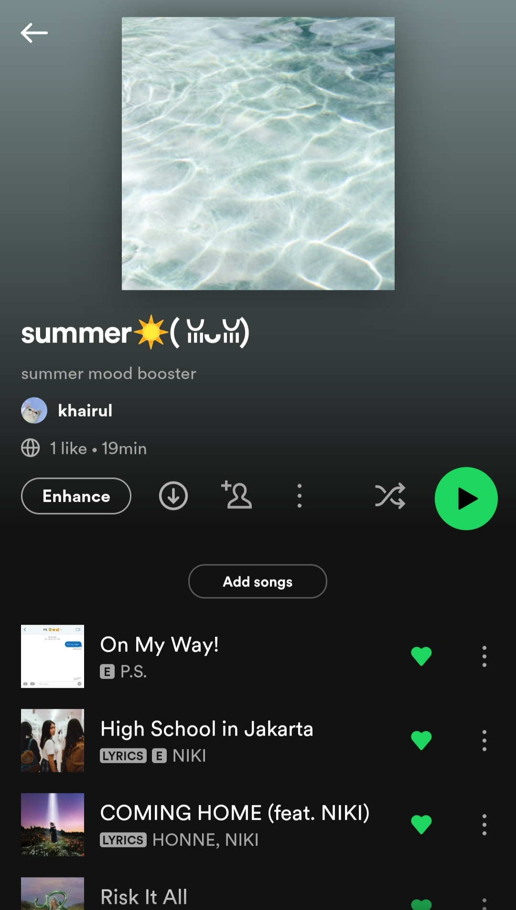

MUSIC.PLAYLISTS
So these are my music playlists , I just love to create my own music playlists , so that it will be easy for me to find the songs
NJ Playlist

NJ means New jeans , a KPOP Group that just debut in early 2022 . They released such a good songs and one of my ultimate favorite is Hype Boys. Their songs give me so much energy.
Quiet Music For Reading Playlists

Since I love to read book , I will play quiet music or Lo-Fi so that I can feel calm when I read book and into the mood.Don't play this playlist at night. Do you know whyy......... It will makes you sleepy hahaha.
On My Way to Class Playlists

This is my playlist whenever I go to the class. It will distract my social anxiety in public. To be honest ,I'm so scared to walk alone during on my way to the class especially when I saw so many students go to their class too. Basically, I will use my earbuds and listen to this playlist.
Arash Buana Playlists

Arash Buana is one of my favorite Indonesian singer other than Afgan.Most of his songs are in english. His songs are so so good like I cannot describe it especially "Stars" , it can makes you crying at night because of the lyrics.I recommend all of his songs if you like ballad type of genre.
Chill Night Playlist

Yep , like I said before , I like to listen to music or song before i go to sleep . So, this is my playlist to makes me calm before I sleep to make sure all the stress and tiredness will go out from my body hahaha.Imagine you play this playlist with scented candle, it will be EXTRA CALMING.
Summer Playlist

Actually I don't know why I created this playlist because I know Malaysia is summer all the time.Maybe I found this song during summer season in west.Summer songs always the best and upbeat so you will feel fresh.